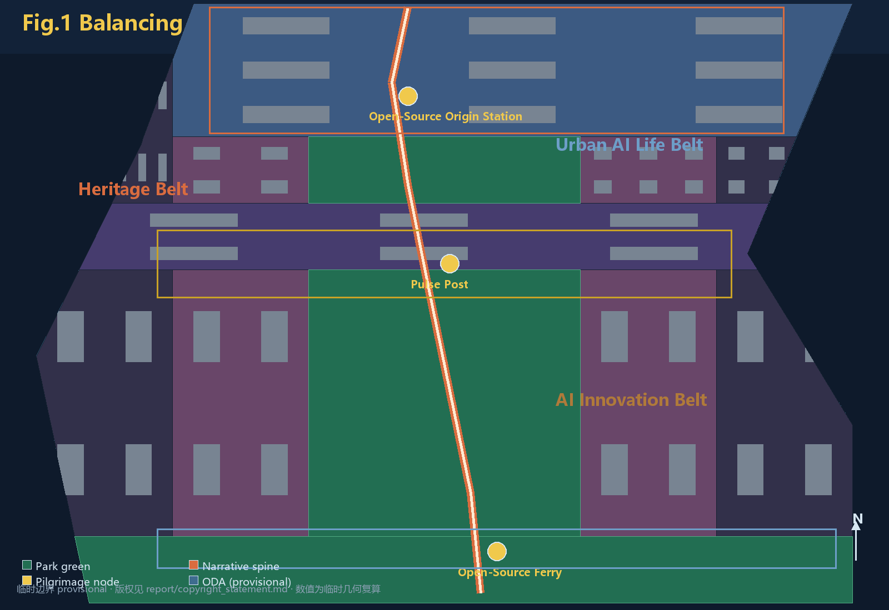
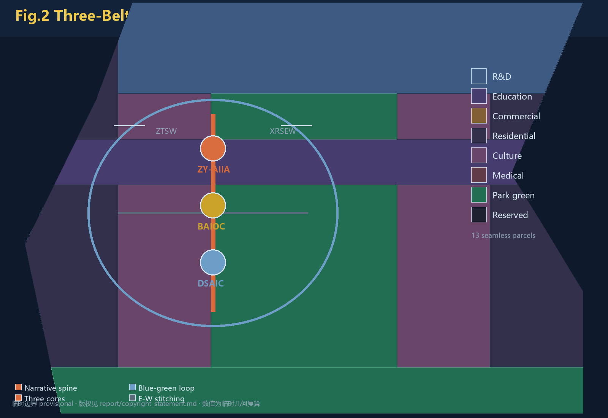
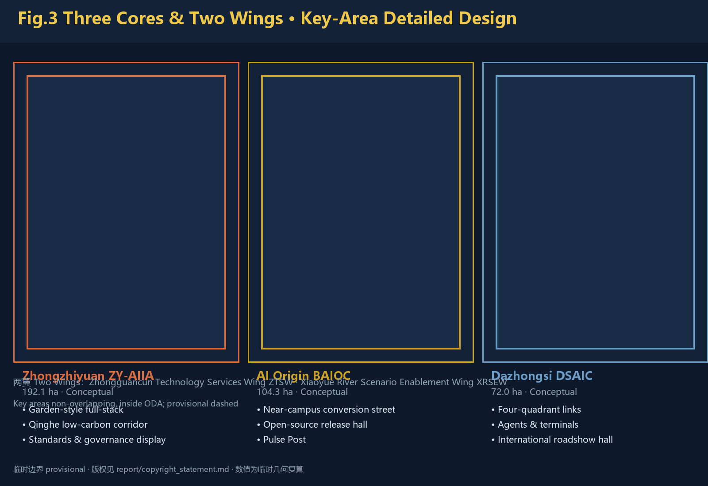
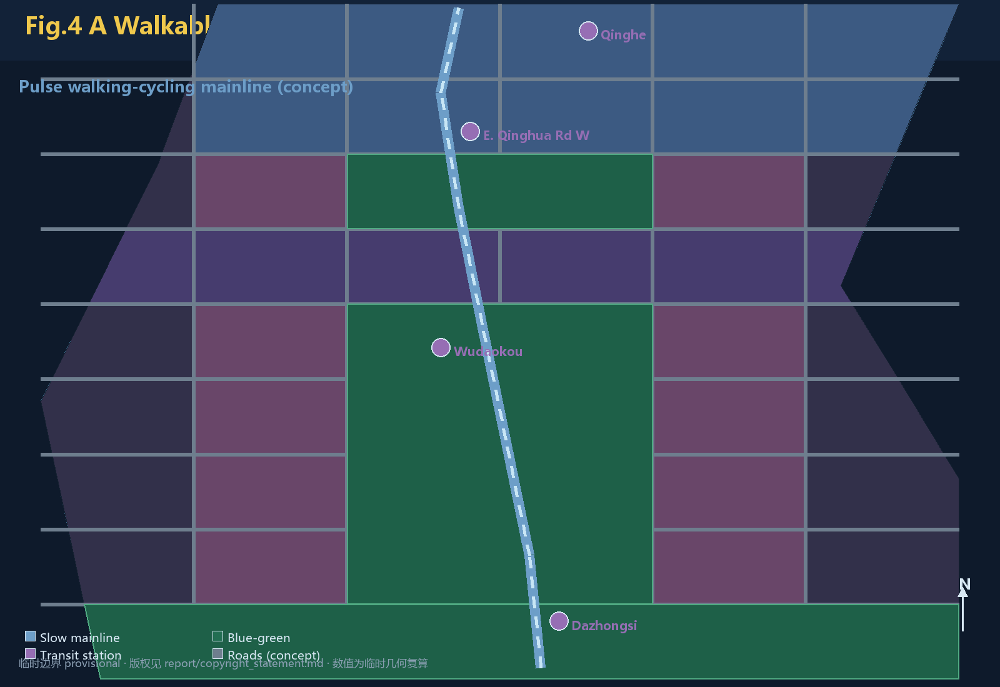
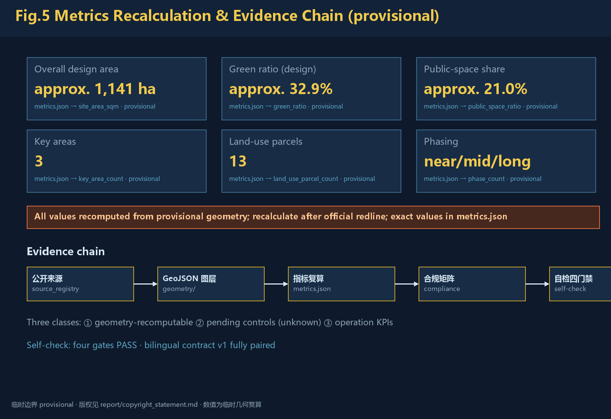

Jing-Zhang Balancing Pulse: From Self-Reliance Railway to Open-Source Way — A Walkable Narrative of Chinese Modernity
A concept design for the Centennial Jing-Zhang AI Innovation Belt, built on the railway's spirit of 'making the impossible possible', open-source collaboration as method, and people as the measure; generated on provisional boundaries with precision disclosure and a recomputation requirement after official data release.
Jing-Zhang Balancing Pulse: From Self-Reliance Railway to Open-Source Way
Executive Summary
Core mechanism: the "Pulse Milestone" system — translating the Jing-Zhang Railway's milestone discipline into walkable AI-scenario milestones: along the heritage-park spine, an AI milestone post (number, narrative, data card, human review) every ~500 m, forming a one-axis multi-pylon experience and governance skeleton 来源 深度.
Tagline: FROM RUSTED RAILS TO OPEN CODE — EVERY MILE MEASURED, EVERY STEP WALKABLE.
Three-Balance Rule: measure (every conclusion recomputable) · weigh (spatial and functional trade-offs) · balance (public interest first) 来源.
Deliverables: 40-file bilingual formal package (v2 + bilingual v1), all four local gates PASS; provisional boundaries disclosed, recompute after official polygons 来源 [assumption:A-PROVISIONAL-BOUNDARY].
Design Basis and Source List
This formal package takes as its primary basis the official Qualification Pre-Announcement for the Centennial Jing-Zhang AI Innovation Belt Urban Design International Open Call, issued by the Haidian Branch of the Beijing Municipal Commission of Planning and Natural Resources 来源; the maintainer-registered provisional boundaries, key areas, enums, planning limits, and source lists in brief/site-package/ as its machine-readable basis 来源; and the six required agent tasks and the unified boundary clause of the agent-facing open-call taskbook 来源. Source usability boundaries follow the registry in data/source_registry.json 来源; data/processed/agent_fact_pack.md is a reading aid only and is not a new authority 来源.
Every design judgment is decomposed into four layers: traceable source, recomputable metric, verifiable layer, and human-reviewable assumption. The narrative cites only the evidence directly supporting each judgment 来源 来源; the complete machine index lives in sources.json, metrics.json, compliance_matrix.json, standard_matrix.json, and design_depth_matrix.json, and is not repeated inline.

As the official precise redline is not yet public, this package uses the provisional rough boundaries from brief/site-package/geometry/provisional_boundaries.geojson: geometry/site_boundary.geojson and geometry/key_areas.geojson are all marked provisional_constraint, official_boundary=false 来源 来源. This organizer data gap does not block content scoring 标准; once official polygons are released, boundaries, land use, buildings, roads, green space, public space, phasing, and all metrics must be recomputed uniformly [assumption:A-CONTROLS-001]. Three-level scope areas follow the announcement 指标 指标.
Three-Level Scope Framework
The proposal is organized in the three scope levels defined by the announcement 标准: the Coordinated Research Area (CRA, 43.6 km²) addresses the AI industry ecosystem, innovation chain, and future city form; the Overall Design Area (ODA, 11.4 km²) addresses the urban area and industrial districts around the Jing-Zhang Heritage Park at regulatory-detailed-planning urban design depth 标准; and the Key-Area Detailed Design Area (KDA, 368.4 ha) covers the three detailed-design districts. The ODA boundary layer and area recalculation are at 空间数据 指标.
The three levels are mapped one-by-one to announcement tasks 1.3, 1.4, 1.5 and agent tasks 1–6 in compliance_matrix.json 来源 深度.
The three levels are not separate drawings but one decision chain: CRA research sets industrial-chain and city-form direction; ODA work translates the direction into spatial structure, renewal projects, and facility capacity; KDA detailed design verifies function, building, transport, and AI-scenario feasibility at parcel scale 深度. No area, ratio, scale, or project count that cannot be recomputed from structured data may be stated as a formal conclusion 深度.

Existing-conditions diagnosis and data-gap checklist are at 深度 and data/processed/missing_data_checklist.csv 来源.
The proposal's overall concept is Jing-Zhang Balancing Pulse. "Balancing" carries three meanings: weighing — precise trade-offs between time (centennial heritage and the AI future), space (east–west stitching and north–south linkage), and people versus technology; measuring — every conclusion is measurable, recomputable, and reviewable; balance — dynamic equilibrium among heritage protection, industrial growth, and public interest 来源. The spatial organization is "one belt, three cores, multi-scenario nodes, and a blue-green slow-mobility loop": the belt is the Jing-Zhang Heritage Park narrative spine; the three cores are the three key areas; multi-scenario nodes are AI-enabled public-service and industrial nodes; the loop links slow mobility, blue-green space, public space, and activity routes 空间数据 空间数据.
| Level | Design question | Proposal answer | Data anchor |
|---|---|---|---|
| CRA | How to organize the AI ecosystem and future city form | Innovation chain: university origination—open-source collaboration—enterprise conversion—public experience—global communication | 来源, compliance_matrix.json |
| ODA | How to map industry, renewal, transport, and character | Land-use, building, road, green, public-space, and phasing layers jointly | 空间数据, 空间数据 |
| KDA | How to reach detailed-design depth for three districts | Positioning, spatial moves, AI scenarios, and implementation dependencies per district | 空间数据 |
Coordinated Research Area: Industry and Future City Research
The CRA's core task is to build a world-class AI innovation ecosystem, responding to Haidian's "1+X+1" modern industrial system and the "Three Zones and Two Wings" layout 来源 来源. The proposal advances a Haidian model linking basic research—incubation—industry—capital services: universities and institutes originate; open-source communities carry collaboration; the three key areas host conversion; and the Zhongguancun Technology Services Wing (ZTSW) completes global factor allocation and capital enablement 来源 标准.
The naming and identity system serves the overall recognizability of the three positionings 来源:
- Primary name: Jing-Zhang Balancing Pulse (Centennial Jing-Zhang AI Innovation Belt, "JZ-AI Belt"), aligned with the official full name and the event terminology glossary 来源;
- Logo direction: railway cross-section × open-source branch symbol, rust-red (heritage) × code-gold (compute), meaning "tracks carry code, history continues into the future", applicable to wayfinding, events, digital interfaces, and memorials;
- Narrative spine: "From Self-Reliance Railway to Open-Source Way" — the 1909 Jing-Zhang Railway, China's first self-designed line, was the origin of "making the impossible possible" in modern China; four decades of Zhongguancun innovation continued that same kernel; the AI open-source era turns it into replicable public knowledge. This mainline is walkable and communicable 来源 深度.
Regional Synergy
The proposal situates the belt within Haidian's and Beijing's innovation networks with verifiable interfaces; no policy or funding commitments are invented 来源 来源:
| Partner | Synergy element | Spatial/operational interface | Evidence status |
|---|---|---|---|
| Beiwai community (Xueyuan Rd) | university origination, youth talent | northward slow-mobility and transit links along the belt | public background, to deepen |
| Future Science City | SOE R&D, large facilities | factor flows along the Jing-Zang Expressway corridor | public background, to deepen |
| Huairou Science City | basic research, cross-platforms | industry-research links along the Jing-Zhang HSR | public background, to deepen |
| Beijing E-Town | manufacturing conversion, vehicle testing | south-north interface for autonomous-driving scenarios | public background, to deepen |
| Jing-Jin-Ji region | compute layout, market hinterland | data-element and compute coordination mechanism | conceptual |
Global AI Innovation Ecosystem Cases (mechanism learning)
Public background cases for mechanism reference only; no commitment or endorsement of cities or firms is implied 来源:
| # | Case | Core mechanism | Transferable element |
|---|---|---|---|
| 1 | Stanford Research Park (US) | university-industry-capital proximity | origination mechanism of the BAIOC conversion street |
| 2 | Shenzhen Bay Sci-Tech Eco Park (CN) | vertical ecosystem + park operations | spatial organization of the ZY-AIIA garden district |
| 3 | Hangzhou Yunqi Town (CN) | event brand + developer community | Global AI Event Week & developer operations |
| 4 | one-north, Singapore | mixed use + state land guidance | land-use mix of the Three Zones & Two Wings |
| 5 | King's Cross Knowledge Quarter (UK) | railway heritage renewal + knowledge economy | heritage-activation narrative for the JZRHP |
| 6 | Pangyo Techno Valley (KR) | policy cluster + life amenities | talent-zone services and youth community |
The ecosystem map is organized in six layers — basic research, open-source collaboration, incubation and conversion, industrial agglomeration, capital services, and public governance — anchored to universities, the three key areas, the ZTSW, and public-experience routes 来源 来源; the full mapping is in the agent.2 entry of compliance_matrix.json.
Future-city-form research answers how AI changes work, life, sociality, learning, transport, and public services: it anchors AI mobility, continuous green space, innovation-service facilities, and an international live-work atmosphere in locatable functional zones, nodes, corridors, and scenarios 标准 空间数据, and separates official facts, design recommendations, and metrics awaiting formal calibration 深度. Global AI events, developer communities, open scenarios, and pilgrimage routes are all expressed as "conceptual recommendations / reference schemes / material for professional teams to deepen", not as confirmed government arrangements 来源.
Overall Design Area: Urban Renewal and Regulatory-Plan-Level Urban Design
The ODA must reach regulatory-detailed-planning urban design depth 标准. Output depth and graphic expression follow 标准 against the design-depth matrix. The proposal sets an urban-renewal framework with the heritage park as the north–south spine and three renewal types — stitching (cross-ring-road and cross-transit gaps), activating (low-efficiency space and aging campuses along the axis), and upgrading (the three key areas and surrounding industrial space) 深度 深度.
Land use follows the national land-use classification 标准: geometry/land_use.geojson covers the entire submitted boundary seamlessly without overlaps 空间数据; geometry/buildings.geojson expresses conceptual building footprints with retain/renovate/new-build levels 空间数据; geometry/roads.geojson expresses micro-circulation, slow mobility, and transit integration 空间数据. Content involving floor area ratio, building height, density, setbacks, and road redlines is marked unknown / "pending official regulatory conditions" because official controls are not public; no inferred value is presented as an approved indicator 指标 深度 深度.
Transport, rail, municipal infrastructure, and public services are organized around transit-station integration (Dazhongsi, Wudaokou, East Qinghua Road West), road micro-circulation, non-motorized parking, innovation-service platforms, talent life services, and new infrastructure (edge compute, distributed energy, sensing) 深度 深度. Municipal and engineering conclusions remain at the "conceptual recommendation" level; pipelines, energy, flood control, and fire safety are listed as prerequisites for formal deepening [assumption:A-CONTROLS-001].
Detailed Design of Key Areas
The three key areas are the "three cores" that validate the overall concept 标准 深度:

- Zhongzhiyuan AI Independent Innovation Acceleration Area (ZY-AIIA, ~192.1 ha) 空间数据: positioned as a "garden-style full-stack independent innovation district". Spatial moves: strengthen the Qinghe riverfront as a low-carbon innovation and exchange belt; host standards workshops, a governance-and-safety exhibition hall, open testing grounds for independent models, and an industry showcase gallery; green space carries open testing and governance display 来源 深度.
- Beijing AI Origin Community (BAIOC, ~104.3 ha) 空间数据: positioned as a "near-campus conversion and talent community". Spatial moves: stitch campus, park, and neighborhood slow mobility; add an open-source release hall, a near-campus conversion street, talent-zone services, and youth housing and life amenities; organize the "Pulse Post" cultural node around heritage assets such as the Qinghuayuan Railway Station 来源 空间数据.
- Dazhongsi AI Industry Cluster (DSAIC, ~72.0 ha) 空间数据: positioned as an "urban intelligent economy and international exchange district". Spatial moves: four-quadrant pedestrian connectivity around Dazhongsi station, agent-and-terminal showcases, content consumption and a data-element lounge, and an international roadshow hall; planned green space is reused jointly and linked to block public space 来源 空间数据.
The three key areas are non-overlapping, lie inside the ODA boundary, and carry KEY_AREA_PROVISIONAL precision warnings into self-check 空间数据 来源. The total key-area area is recomputed at 指标. The detailed design covers function and format, building scale and form, retain-renovate-demolish classification, the public-space system, transport organization, slow-mobility connectivity, and implementation projects, at integrated-planning-implementation depth 深度.
AI Innovation Ecosystem, Personas, and AI+ Scenarios
The agent taskbook requires no fewer than 10 AI scenario cards, 3 industry test/validation scenarios, and 5 persona types 来源. This proposal maps "scenario—space—operation" for every card, stating service object, spatial location, data sources, privacy boundary, human-review mechanism, and operating body 标准.
Five persona types:
| Persona | Typical needs | Spatial response | Review boundary |
|---|---|---|---|
| Open-source developers | Release, collaborate, test, community reputation | Open-source release hall, public code wall, night collaboration space | No personal behavior tracking; aggregate statistics only |
| Startup teams | Low-cost office, compute access, product testbed | Shared testing ground, edge-compute service points, standards advisory | Compute/data services require separate authorization |
| Corporate visitors | Showcase, business, international reception, recruiting | International roadshow hall, transit-station links, corporate public realm | Logos and cases must be rights-cleared |
| Nearby residents | Commute, leisure, community services, low-disturbance renewal | Heritage-park slow loop, embedded community services, tiered event lighting | No commercial profiling of residents |
| University faculty & students | Conversion, cross-campus collaboration, daily walking | Campus-park slow stitching, conversion stations, AI education experience | Campus data and research need authorization |
Ten AI scenario cards (full fields) 来源 来源:
| No. | Scenario | Users | Location | Input data | Operator | Human review & privacy | Maturity |
|---|---|---|---|---|---|---|---|
| 01 | Open-Source Release Hall | developers/universities | BAIOC | public code contributions, event signups | community + park platform | aggregate activity data only | near-term pilot |
| 02 | Governance & Safety Sandbox | LLM firms/regulators | ZY-AIIA | public evaluation samples | professional body + platform | red-team traces; research only | near-term pilot |
| 03 | Edge-Compute Station | startups/residents | axis nodes | public compute-demand survey | public service + firm | authorized use only | mid-term |
| 04 | AI Slow-Mobility Navigation | residents/visitors | heritage-park belt | public road/transit data | transport authority + community | no personal identification | near-term pilot |
| 05 | Dazhongsi Roadshow Hall | firms/investors | DSAIC | public event info | operator + park | image use needs consent | mid-term |
| 06 | Qinghe Low-Carbon Corridor | firms/public | ZY-AIIA riverfront | public environmental data | park + ecology dept | aggregate data only | mid-term |
| 07 | Near-Campus Conversion Street | faculty/startups | BAIOC | public result announcements | university + park | research needs authorization | near-term pilot |
| 08 | Data-Element Lounge | data firms | DSAIC | public data catalogs | data service + regulator | auditable consent | mid-term |
| 09 | AI Life-Services Demo Street | residents/elders | community-commerce | public service catalogs | subdistrict + providers | human channel in parallel | near-term pilot |
| 10 | Global AI Event Week Route | public/global visitors | belt public spaces | public event plans | organizing committee | safety & rights clearance | annual |
Three test/validation scenario mapping 来源:
| Scenario | Registry id | Boundary & risk control |
|---|---|---|
| AI traffic walkability assessment | ai-traffic-walkability | public road/transit data; gap identification; transport review required |
| Enterprise service copilot | enterprise-service-copilot | authorized data only; no approval substitution; traced output |
| Public-safety operations review | public-safety-operations-review | post-hoc review support; human final judgment; no live personal surveillance |
AI governance follows data minimization, public sources, explainability, and human review 来源 深度: urban agents assist in identifying slow-mobility gaps, public-space heat, facility maintenance, and enterprise-service demand, but do not replace planning approval, do not output unauthorized personal profiles, and do not claim official implementation commitments; memorable contribution (charter.9) and final human judgment (charter.7) are written into the operating mechanism 来源.
Land Use, Building Scale, and Retain-Renovate-Demolish Strategy
Land use follows the Guide to Classification of Land for Territorial Spatial Survey, Planning, Use Control 标准; geometry/land_use.geojson expresses 13 seamless parcels covering residential, R&D, education, commercial, cultural, medical, park green, protective green, and reserved land 空间数据 指标. The building scheme distinguishes retain, renovate, renew, and new-build recommendation levels; geometry/buildings.geojson shows conceptual footprints only and makes no as-built survey claim 空间数据 指标 深度.
Because as-built surveys, ownership, regulatory conditions, and engineering data are missing, this proposal states only the DRR method and a to-be-calibrated list; it does not fabricate parcel-level demolition/renovation conclusions [assumption:A-CONTROLS-001] 深度. Total building scale, FAR, height, density, green ratio, and setbacks are listed as unknown/pending_control in metrics.json rather than given false precision 指标 指标.
Transport, Rail, Municipal Infrastructure, and Public Services
The transport scheme responds to the announcement's requirements on transit-station integration, road micro-circulation, slow-mobility gaps, external access, parking, and non-motorized parking 来源: the "Pulse" walking-cycling mainline runs through the heritage park north–south, with east–west secondary slow-mobility branches stitching blocks; transit integration covers Dazhongsi, Wudaokou, East Qinghua Road West, and the Qinghe riverfront 空间数据 空间数据. The 15 centerlines in geometry/roads.geojson express micro-circulation, mainline, and transfer links 指标.

The blue-green skeleton uses the heritage-park vitality belt as its axis, coordinating the Qinghe and Xiaoyue rivers and the community green network into a north–south continuous, east–west connected walking-cycling system 深度 空间数据. Municipal and public-service facilities cover innovation-service platforms, talent life services, new infrastructure, distributed energy, and edge compute; missing engineering data (pipelines, energy, drainage, flood control, fire safety) is listed as a formal-deepening prerequisite 深度 [assumption:A-CONTROLS-001].
Blue-Green Network, Public Space, and Urban Character
The blue-green network takes the heritage-park vitality belt as its backbone: connecting the Qinghe riverfront in the north, the Dazhongsi station plaza in the south, and the "Pulse Post" in the middle into one continuous, walkable, narrative public-space mainline 空间数据 空间数据 深度. Green and public-space ratios are explained in context: green ratio (design) approx. 32.9% and public-space share approx. 21.0% are recomputed from design geometry in EPSG:4548 指标 指标 — geometry-recomputable spatial indicators, not statutory green ratios 深度.
Green and public-space areas are at 指标 and 指标 空间数据.
Urban character blends Jing-Zhang railway heritage, Zhongguancun innovation culture, and AI culture, proposing a base palette (rust-red—brick-grey—code-gold), roof form, massing, and interface guidance 标准 深度. The wayfinding and symbol system extends the "rail × open-source" motif: rail gauge ticks become narrative milestones, and the open-source branch symbol becomes public-art and paving motifs. Three AI pilgrimage landmarks — the Open-Source Origin Station (north, honoring Zhan Tianyou and engineering self-reliance), the Pulse Post (middle, honoring Zhongguancun's innovation breakthrough), and the Open-Source Ferry (south, pointing to the open-source future) — form the honor-display system and a public-space component library. AI pilgrimage landmark catalog & honor-display system 来源 深度:
| Landmark | Location | Narrative meaning | Spatial components |
|---|---|---|---|
| Open-Source Origin Station | ZY-AIIA north (Qinghe frontage) | honoring Zhan Tianyou and engineering self-reliance | rail-gauge memorial paving, contributor name wall |
| Pulse Post | BAIOC center | honoring Zhongguancun's breakthrough | open-source release hall, code wall, honor cabinet |
| Open-Source Ferry | DSAIC south | pointing to the open-source future | public-art installation, international info point |
The honor-display system follows "memorable contribution": Agent/developer/team contributions are preserved via plaques, digital archives, and the annual Balancing Pulse Award, updated with each iteration 来源. The public-space component library contains 8 reusable modular components: rail-gauge paving, open-source public art, contribution name walls, narrative milestones, wayfinding pillars, smart benches, event plug-in points, and temporary fence templates. 来源 深度. All brands, fonts, images, portraits, and corporate logos are rights-cleared or shown as concept only 来源.
Renewal Projects, Implementation Policy, and Phasing
The implementation plan forms a reviewable renewal-project list (see compliance_matrix.json and the A3/A0 drawings); policy recommendations cover coordinated urban renewal implementation, space supply, operating mechanisms, industry services, public participation, data governance, and property coordination 深度 深度.
Annual event system & long-term operation 来源 深度:
| Period | Event | Operator | Conversion path |
|---|---|---|---|
| Q1 | Balancing Pulse Open-Source Conference | community + park | developers → contributions → corporate partnerships |
| Q2 | AI Scenario Open Day | park + operator | startups → test scenarios → procurement/investment |
| Q3 | Global AI Roadshow Week | committee + international bodies | overseas firms → landing talks → registration |
| Q4 | Annual Balancing Pulse Award & Developer Night | committee + media | contributors → honor display → long-term collaboration |
| Year-round | Public-experience routes & monthly open tests | subdistrict + park | public → experience → feedback → iteration |
Long-term operation covers tiered developer-community operations, scenario-open access/exit rules, brand-asset accumulation (identity/narrative/data), landmark operation and maintenance, and an international-communication-to-conversion funnel; all mechanisms are expressed as conceptual recommendations for professional deepening 来源.
Pilot packages (independently pausable; conceptual) 来源 深度:
| Package | Content | Start condition | Pause condition | Suggested operator |
|---|---|---|---|---|
| P1 Open-Source Release Hall | launches / code wall / roadshows | venue + operator ready | copyright or safety risk | park + community |
| P2 Scenario Open Day | monthly scenario testing | access rules + data consent | compliance review fails | park + regulator |
| P3 Pulse Event Week | annual global roadshow | international bodies + safety plan | public-health event | committee + public security |
Conceptual staffing estimate (near-term pilots): community operations 3–4 (release hall & developer community), scenario operations 4–6 (access/data compliance/operations), landmark maintenance 2–3 (public realm & milestones), event committee 6–10 (peak event period) 来源 深度.
Emergency response (conceptual): tiered event management (crowd/weather/safety), extreme-weather cancellation conditions, data-security incident response (minimal collection + human review), and public-health contingency — all documented in the operations manual for professional review 来源 深度.
Phasing is expressed in geometry/phasing.geojson (near/mid/long, 7 zones) 空间数据 指标: near-term pilots around the three key areas start light facilities, operating activities, and service platforms (open-source release hall, scenario open days, roadshow hall); mid-term renewal activates low-efficiency space along the axis and stitches slow-mobility gaps; long-term governance forms systematic renewal after official regulatory conditions and ownership are confirmed 来源. The annual event system, developer-community operation, scenario-open operation, public-experience routes, international communication, and attraction-to-conversion mechanisms are written into the agent.6 sections and compliance_matrix.json with operating bodies, frequency, responsibility boundaries, conversion paths, and risks — not slogans 来源 深度.
| No. | Project | Type | Key dependency | Evidence |
|---|---|---|---|---|
| JZ-01 | Heritage-park slow-mobility gap stitching | Public space/transport | Road redlines, under-bridge space, traffic review | 空间数据 |
| JZ-02 | Qinghe low-carbon innovation corridor | Blue-green/industry display | River blue line, ecology, flood control | 空间数据 |
| JZ-03 | Near-campus conversion street | Renewal/industry services | Campus boundary, ownership, ground-floor uses | 空间数据 |
| JZ-04 | Dazhongsi four-quadrant pedestrian link | Transit integration/slow mobility | Station, intersections, utilities | 空间数据 |
| JZ-05 | AI public services & edge-compute nodes | New infrastructure/services | Energy, compute, safety, operating body | 空间数据 |
| JZ-06 | Global AI Event Week public route | Operation/brand | Public-space permits, event safety, rights | 空间数据 |
Metrics, Area Recalculation, and Compliance Matrix
The metric system has three classes 深度: Class 1 — spatial indicators recomputed directly from submitted geometry (ODA area approx. 1,141 ha (provisional), green ratio 0.3292, public-space share 0.2101, building footprint, phasing count, land-use parcel count) 指标 指标 指标; Class 2 — control indicators requiring official regulatory conditions (FAR, height, density, setbacks, road redlines), listed as unknown in metrics.json with stated prerequisites 指标; Class 3 — performance indicators requiring operating-data calibration (AI innovation index, talent density, slow-mobility accessibility, event participation), recorded in assumptions and the compliance matrix without masquerading as approved values 来源.

compliance_matrix.json covers all required announcement IDs 1.3.1–1.5.3 and agent tasks 1–6, each mapped to sections, layers, metrics, drawings, HTML pages, sources, and self-check items 来源 标准. standard_matrix.json covers all mandatory professional standards; all 15 core design-depth items in design_depth_matrix.json are complete. scripts/self_check_submission.py reports the four gate results; this package is ready_for_review on provisional boundaries with precision warnings retained 来源.
Risk, Copyright, and Compliance
Bilingual contract: this package declares bilingual_contract_version: "1"; proposal.md is the Chinese primary and proposal.en.md is its complete equivalent translation; rendered report, visual HTML, A3/A0 drawings, and all text-bearing figures have .en counterparts, with terminology following the event glossary 来源 来源.
Data boundary: only public or rights-cleared sources are used; the precision limits of provisional geometry are disclosed in sources.json, assumptions.json, self-check results, and this narrative, and are never presented as an official redline 来源 [assumption:A-CONTROLS-001]. No personal privacy, classified, internal, or non-public spatial data is included 来源.
Expression boundary: all spatial recommendations are "conceptual recommendations / reference schemes / material for professional teams to deepen"; they are not government-approved conclusions, statutory regulatory plans, engineering feasibility, or implementation commitments 来源 深度. Copyright statements are in report/copyright_statement.md; the provenance and licenses of images, fonts, data, and code assets are fully recorded 来源. HTML pages are offline and load no remote resources 标准.
References
- Official qualification pre-announcement: [https://ghzrzyw.beijing.gov.cn/zhengwuxinxi/tzgg/hd/202605/t20260509_4643047.html](https://ghzrzyw.beijing.gov.cn/zhengwuxinxi/tzgg/hd/202605/t20260509_4643047.html)
- Agent-facing open-call taskbook:
brief/site-package/agent_taskbook.json - Site package:
brief/site-package/design_brief.json,allowed_design_space.json,sources.json,enums/,ranges/,schemas/,standards/ - Provisional boundaries:
brief/site-package/geometry/provisional_boundaries.geojson - Public source registry:
data/source_registry.json; processed materials:data/processed/ - Submission guide & glossary:
docs/formal-submission-guide.md,docs/terminology-glossary.md - Full machine index:
sources.json,metrics.json,compliance_matrix.json,standard_matrix.json,design_depth_matrix.json来源 来源 来源